Azure Visual Expansion
with Runway04
What is it:
Azure Shape Expansion is a creative exploration of Azure’s visual identity, focused on expanding its library of 3D shapes and wireframe building blocks. These elements represent the technical precision, structure, and interconnected systems behind Azure’s technology. By introducing new shapes and compositions, the project builds on the existing design language, creating more opportunities to visualize complex systems through immersive, dimensional storytelling while maintaining a consistent brand aesthetic.
Why we built it:
We created Azure Shape Expansion to explore how AI could help scale an established design system beyond the limitations of a traditional asset library. Rather than manually creating every new shape, we use AI to accelerate experimentation, generate a wide variety of visual directions, and discover new ways to express Azure’s identity. This allows us to push the brand into new creative territory, reduce repetition, and build a more flexible visual system that can grow alongside Azure. The goal isn’t to let AI define the design, but to use it as a creative tool to expand possibilities, with designers guiding the direction and ensuring everything stays true to the brand.
Shapes
The goal is coherence, not one beautiful outlier.
Starting with a simple collection of grayscale 3D shapes as our foundation, we used AI to explore an enormous range of new visual possibilities. These basic forms became the building blocks for generating hundreds of unique shapes, structures, materials, and variations, transforming a limited set of assets into an expansive creative library. By experimenting with different geometries, textures, lighting, and dimensional treatments, we were able to rapidly explore new Azure looks while staying connected to the original design language. What traditionally would have required extensive manual modeling and rendering became a scalable creative process, allowing us to push visual boundaries, discover unexpected directions, and dramatically expand the possibilities of Azure’s visual identity.
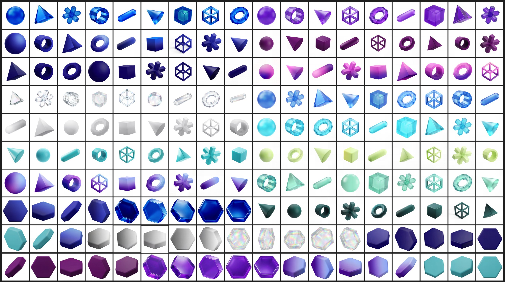
Colorways
By using AI to mix and match different shapes, materials, and color combinations, we were able to transform a small collection of Azure building blocks into an expansive range of visual possibilities. Experimenting with solid 3D forms, wireframes, gradients, and different background colors allowed us to quickly explore new compositions and discover unexpected combinations. AI made it possible to generate countless variations while maintaining a consistent visual structure, giving us the flexibility to explore new Azure looks without starting from scratch.
Compositions
Workflow
To rapidly scale our shape exploration, we built reusable node-based workflows in Runway that combine grayscale 3D assets, color references, material treatments, and AI prompts into a repeatable generation system. The grayscale shapes provide a consistent structural foundation, while the colorways and material references define the visual direction. Prompts act as instructions, guiding AI on how to apply these treatments while preserving the original geometry. By connecting these inputs through reusable workflow graphs, we could generate multiple variations across different shapes and color combinations without rebuilding the process each time. This approach transformed a handful of basic assets into an expansive library of visual possibilities, accelerating experimentation and making it easier to explore, refine, and scale new Azure looks.
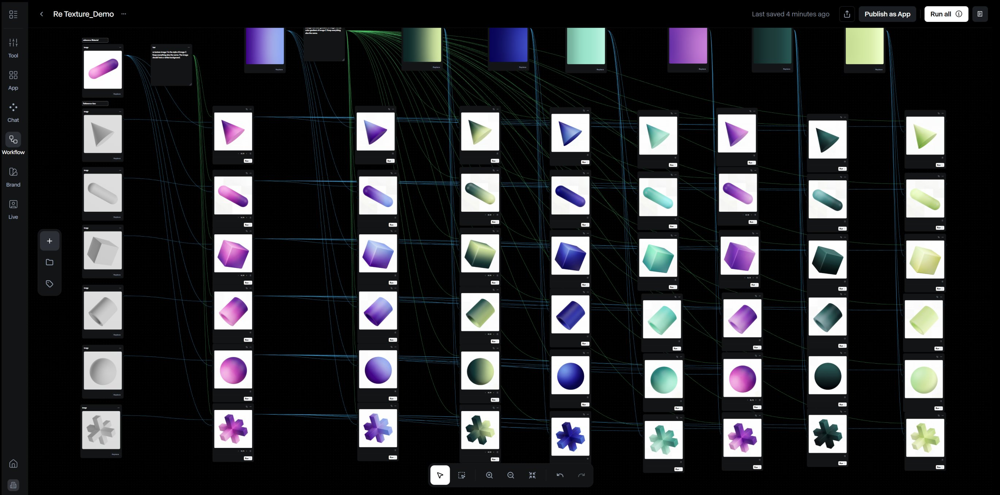
Assets in Action
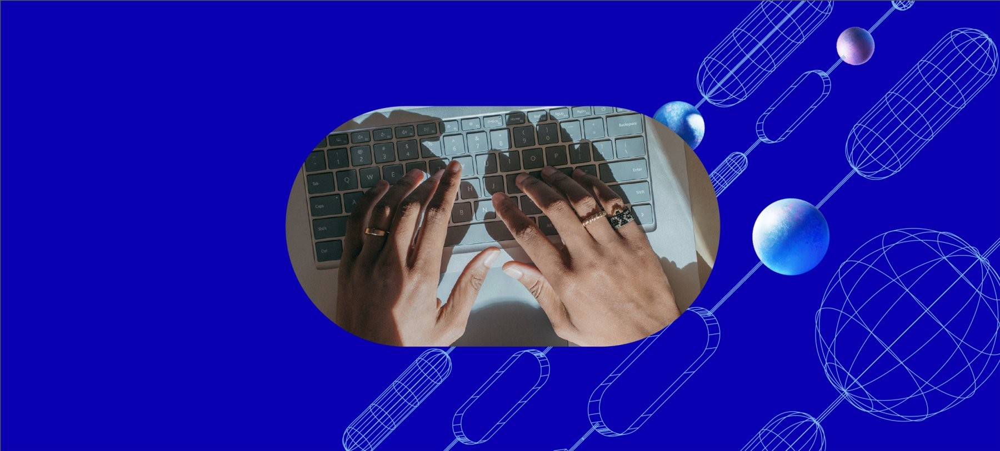
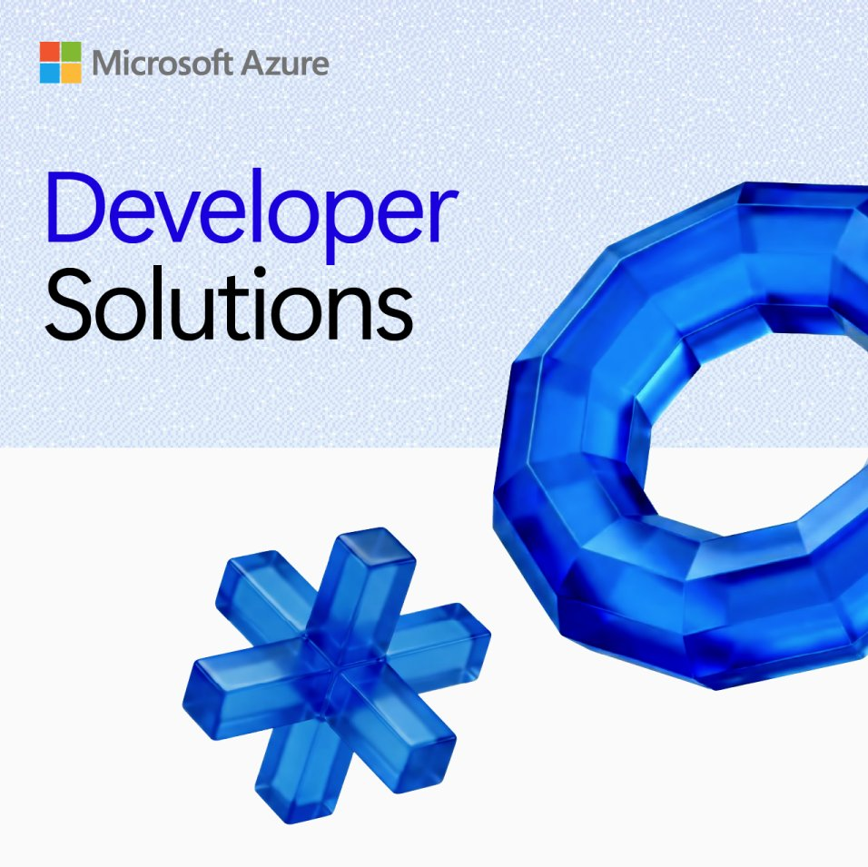
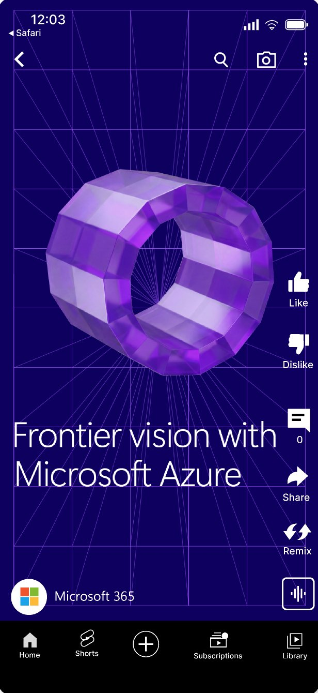
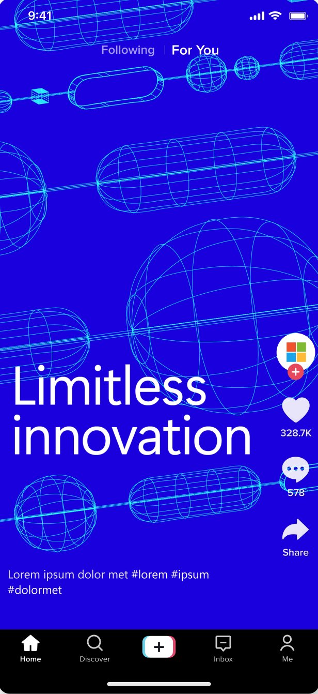
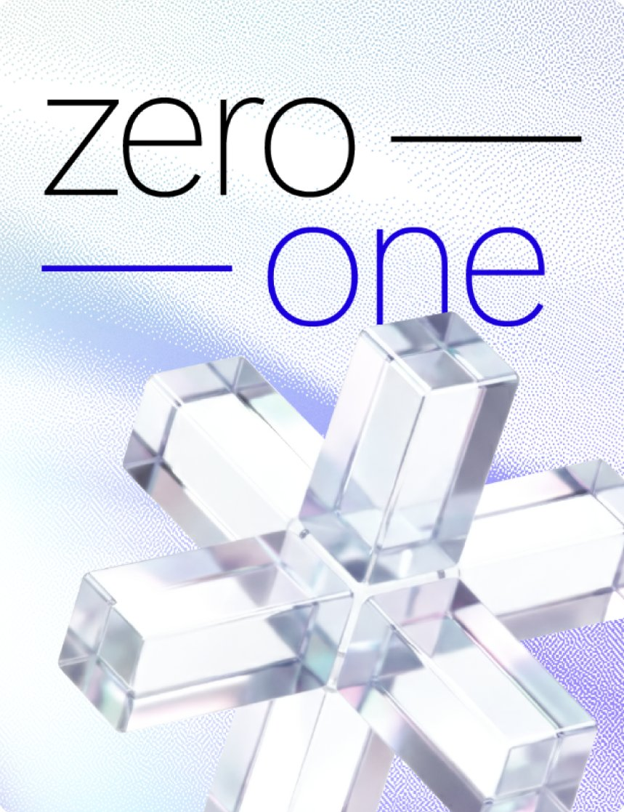
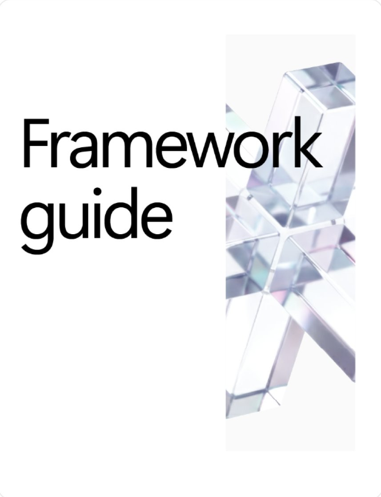
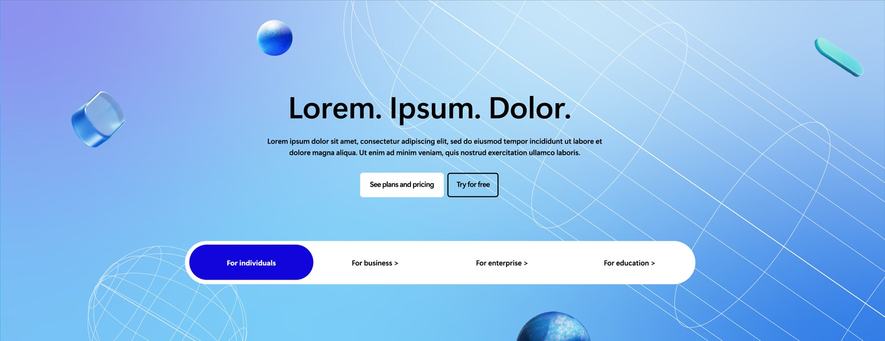
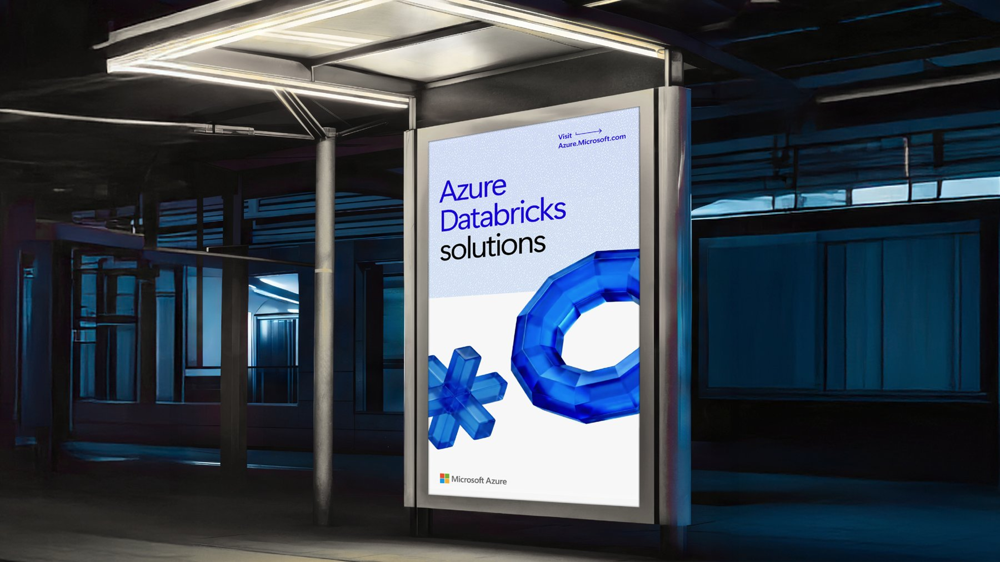
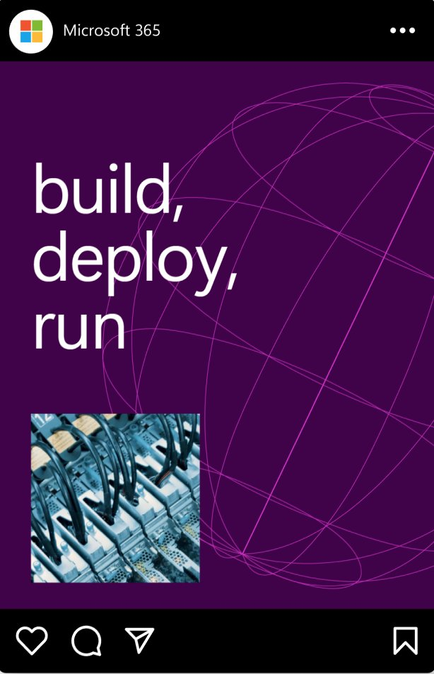
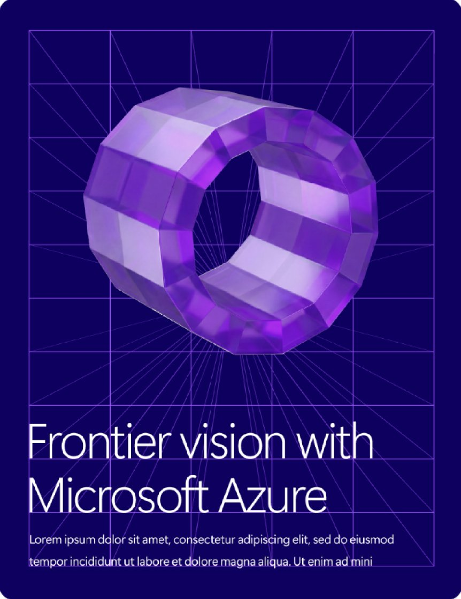
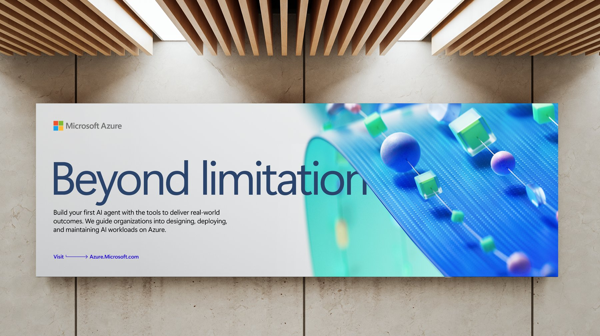
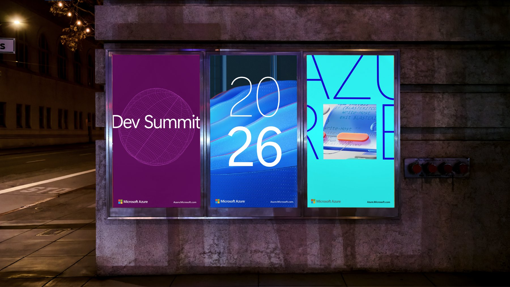
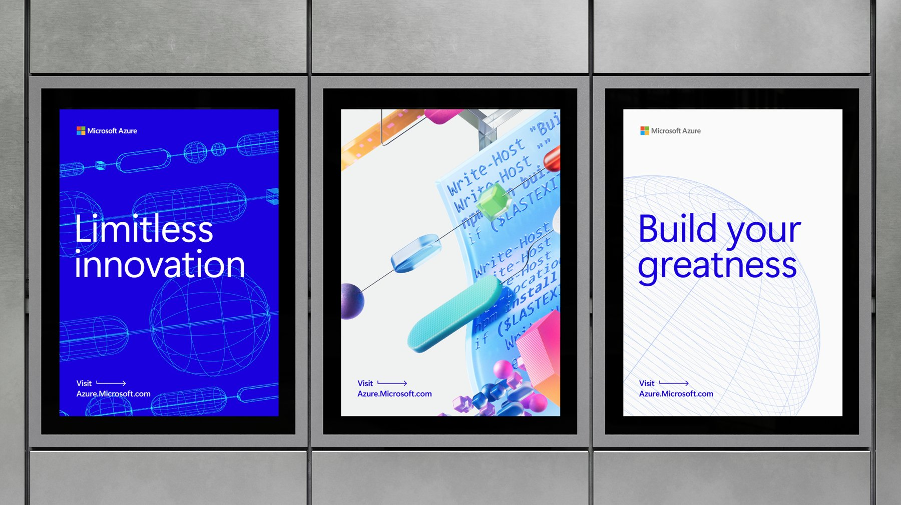
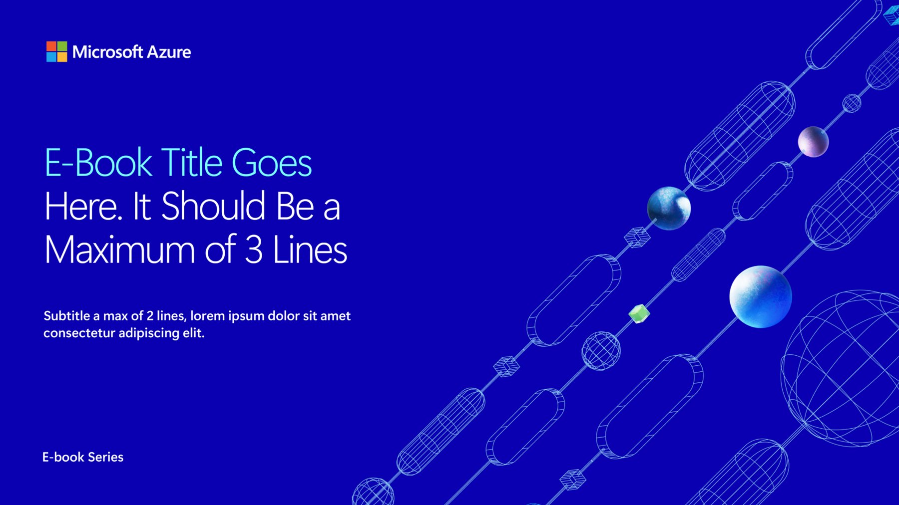
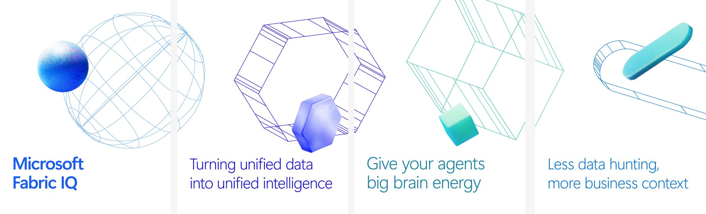
Results
-
$200K+ saved
The Azure VisID project delivered more than $200,000 in savings compared with equivalent agency production.
-
Up to 3× faster
AI accelerated the strongest exploration and production cycles by up to three times.
-
Greater creative range
The team could explore more materials, compositions, and motion directions without manually producing every variation.
-
A scalable production
The project established a broader method for combining traditional design craft, AI exploration, structured workflows, and human judgment.